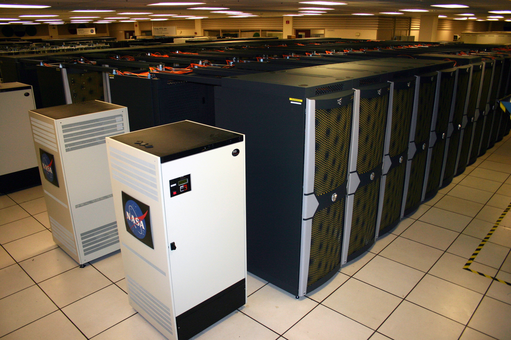

01 / ARTIFICIAL INTELLIGENCEKLINTON’S CARNAPOL SPEECH
Make Carnapol part
of the next breakthrough.
As Energy Minister, Klinton says he supported construction of a major AI data centre in Carnapol in the year before his speech. He pledges continued support and resources for artificial intelligence.
Read the commitment